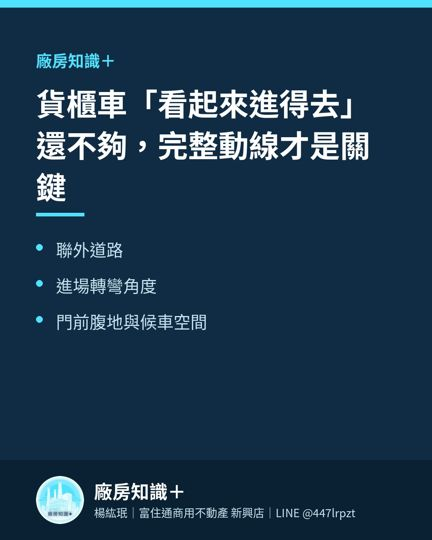

物流業找廠房，腹地有時比建坪更重要
一間倉庫有 300 坪，不代表它就適合物流業。
物流業真正關心的，不只是貨放得下多少，而是車輛能不能快速進、順利停、有效率地完成裝卸，再安全離場。這些動作，都發生在「腹地」。
為什麼腹地這麼重要？
第一，貨櫃車需要轉彎與迴轉空間。
40 呎貨櫃車車身長、迴轉半徑大，若門前空間不足，即使道路看起來很寬，仍可能需要多次倒車，甚至無法順利進場。
第二，裝卸不能互相干擾。
物流尖峰時段可能同時有多輛車等待。若沒有候車區、卸貨區及人車分流，車輛容易堵在門口，影響效率與安全。
第三，腹地決定營運彈性。
旺季貨量增加、臨時調度、貨櫃暫放、棧板整理，都需要額外空間。腹地不足時，室內再大，也可能被迫把作業擠在通道內。
第四，好的動線可以降低長期成本。
車輛少一次倒車、少一次等待、少一次外部轉運，長期累積就是時間、人力與油料成本的差距。
看物流廠房時，建議現場實際走一次車輛動線：
從聯外道路進場、轉彎、停靠、裝卸、迴轉到離場，確認每一個環節是否順暢。
對物流業來說，真正有價值的不是「空地看起來很大」，而是整個場地能不能讓車流、貨流與人流有效運作。
相關文章
高雄工業區發展趨勢：企業選址正在從「找空間」走向「找效率」2026-07-30

貨櫃車「看起來進得去」還不夠，完整動線才是關鍵2026-08-09企業準備擴廠，不要等空間不夠才開始找2026-08-06目前的物件
仁武區廠房｜大林鎮廠房｜岡山區廠房｜林園區廠房｜鳳山區廠房｜路竹區廠房・土地｜乙種工業區｜甲種工業區｜丁種建築用地｜大型廠房・千坪工業地｜廠房出租｜工業用地・土地